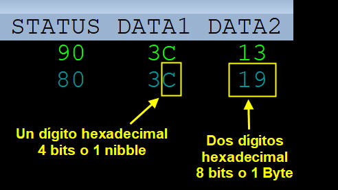
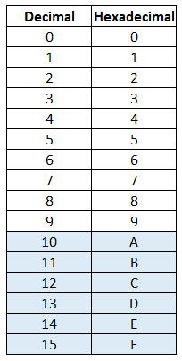
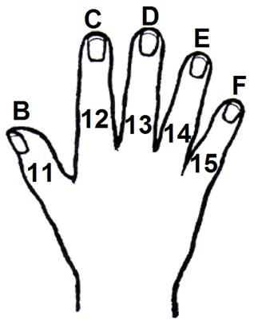

Convertir números de hexadecimal a decimal de 4 bits (un nibble o un dígito hexadecimal)
¿Te es familiar esta imagen?

Es lo que aparece cuando solemos tocar una tecla en un teclado MIDI. Nuestra consigna el semestre pasado fue: "Si al presionar teclas del teclado el byte de status aparece el número 8n o 9n, donde n es cualquier número hexadecimal, asumimos que el teclado está operando correctamente".
Este semestre nos toca entender qué significa cada uno de esos números.
Todos están en hexadecimal. Es decir ahí estás viendo el número uno-nueve y no diecinueve.
Por esa razón debemos familiarizarnos con los números en hexadecimal, lo haremos primero con un solo dígito (4 bits, o un nibble). Aquí el resumen:

En base 16 hay 16 dígitos que hay que representar, no hay problemas con número del 0 al 9 pues tiene un sólo dígito como el decimal. Los matemáticos decidieron representar los otros valores (10 al 15) con letras, pueden ser mayúsculas o minúsculas. Es buena costumbre añadir una "h" a un número hexadecimal para advertir al lector que el número que está viendo está en esa base.
Por esa razón lo correcto en nuestro monitor MIDI era presentar el número 19 (uno-nueve) como 19h.
Es fácil recordar los números en hexadecimal, sólo cuenta con los dedos siguiendo este truco:
